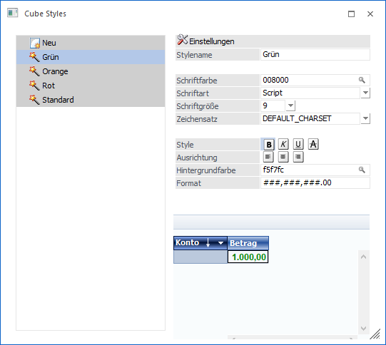
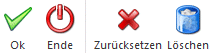

Die Cube Styles können unter…
1 WinLine INFO
1 Business Intelligence
1 Enterprise
1 Styles
… angelegt werden. Mittels Cube Styles werden die Formatierungen für die Ampelfunktion definiert.

Tabelle
Ø Neu
Mittels Mausklick auf den Eintrag "Neu" kann ein neuer Cube Style angelegt werden. Unterhalb des Eintrags "Neu" werden alle bereits angelegten Styles aufgeführt.
Einstellungen
Ø Stylename
An dieser Stelle kann die Bezeichnung eingegeben werden.
Ø Schriftfarbe
Mit Hilfe eines Matchcodes (Lupen-Symbol, Taste F9 oder Doppelklick) kann die gewünschte Schriftfarbe ausgewählt werden.
Ø Schriftart
In diesem Feld wird die Schriftart, in welcher der Wert angedruckt werden soll, ausgewählt.
Ø Schriftgröße
An dieser Stelle wird die Schriftgröße definiert.
Ø Schriftsatz
In diesem Feld kann der Schriftsatz gewählt werden. Dabei stehen die folgenden Auswahlen zur Verfügung:
ü Default_Charset
ü Symbol_Charset
Ø Style
Mittels aktivieren und deaktivieren des Buttons "Style" kann der Wert wahlweise fett, kursiv, unterstrichen und durchgestrichen dargestellt werden.
Ø Ausrichtung
Ob der Wert linksbündig, zentriert oder rechtsbündig dargestellt werden soll, definiert man mit den entsprechenden Buttons.
Ø Hintergrundfarbe
Mittels Matchcode (Lupen-Symbol, Taste F9 oder Doppelklick) kann eine Hintergrundfarbe ausgewählt werden.
Ø Format
Soll der Wert, welcher in eine bestimmte Wertspanne fällt nicht direkt angedruckt werden, sondern durch ein bestimmtes Wort oder Ziffernfolge ersetzt werden, kann im Feld "Format" dieses Wort oder Ziffernfolge hinterlegt werden.
Beispiel
In den Ampelfunktionen wurde hinterlegt, dass ein Wert kleiner 100 mittels Style XY angedruckt werden soll. Da in diesem Fall der Auswertung der Werte kleiner 100 besonders schlecht ist, soll dies besonders aus dem Cube herausstechen und mit "ACHTUNG!" anstelle des genauen Wertes angedruckt werden.
Buttons

Ø Ok
Durch Anwahl des Ok-Buttons oder der F5-Taste wird der Style gespeichert.
Ø Ende
Mittels des Buttons "Ende" oder ESC-Taste wird der Programmbereich geschlossen und vorgenommene Änderungen verworfen.
Ø Zurücksetzen
Wird der Button "Zurücksetzen" gedrückt, dann werden alle Einstellungen auf ihren Ausgangspunkt zurückgesetzt.
Ø Löschen
Mittels des Buttons "Löschen" kann ein Style gelöscht werden.